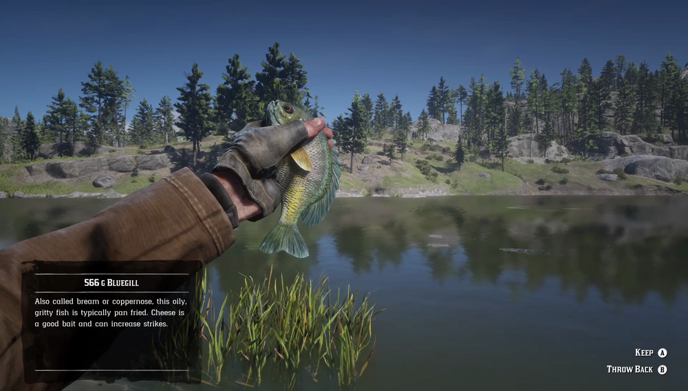

Bluegill is a small freshwater fish, often preyed upon by Muskie and bass. They are easily caught using food baits, such as cheese. Bluegill prefer open water and are found in lakes and rivers all over the country. They are particularly active during rain. Fishermen around Scarlett Meadows tell tales of a Legendary Bluegill.
Scarlett Meadows.
